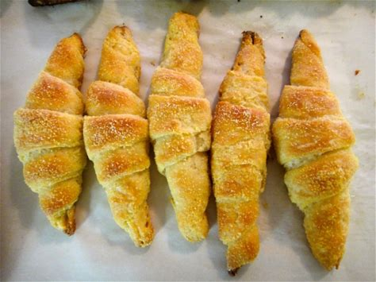

un delicioso postre cuya receta es un poco laboriosa, es ideal para desayuno o merienda compartido con familiares,Puedes rellenarlos con crema pastelera o membrillo

ingredientes
800 gramos de harina
90 gramos de manteca
100 gramos de azucar
500 mililitros de leche
1 huevo
1 sobre de levadura
5 mililitros de vainilla
instrucciones
calentar la leche con la manteca
temperatura aproximada 60 grados
agregar el azucar y la levadura
agregar poco a poco la harina hasta obtener una masa elastica